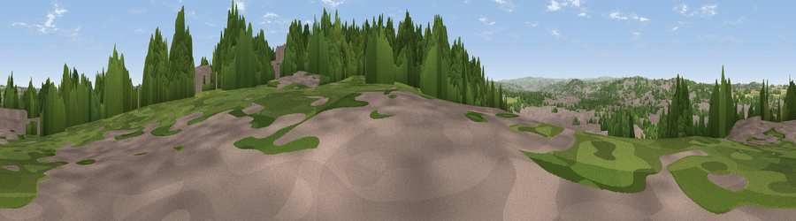

Viewpoint near Rotherham
#33098 in England · top 66% of its area beats it · near RotherhamThe view, rendered

A 360° render of this exact spot computed from the terrain model, tree cover and land cover — summer colours, afternoon light, calibrated against photographs of famous viewpoints. Real trees, hedges and buildings will differ in detail.
The panorama
Grey silhouette: terrain skyline in each direction (720 bearings, Earth curvature and refraction included). Dashed green: skyline with trees (+15 m) and buildings (+8 m) as obstacles. Blue strip: how far the ground is visible on each bearing.
Where the view opens
Wedge length = distance to the farthest visible ground on that bearing (vegetation-aware). Rings at 10, 25 and 50 km.
What fills the view
51% built-up · 37% woodland · 9% grassland · 2% cropland
Angular shares of the visible panorama (visual magnitude), not map area. Landscape diversity 0.45 (0–1 Shannon).
Key numbers
More beautiful places nearby
The staircase of upgrades: each row has a higher view potential than everything closer. Driving times are estimates from straight-line distance, calibrated against real road routing — check an actual route before setting out.
| Place | Direction | Drive | Score |
|---|---|---|---|
| Viewpoint near Rotherham | S · 0 km | ~2 min | 54.5 |
| Viewpoint near Dalton Magna | E · 4 km | ~9 min | 58.4 |
| Hoober Stand | NNW · 7 km | ~14 min | 64.2 |
| Viewpoint near Ridgeway | SSW · 10 km | ~19 min | 67.6 |
| Viewpoint near Oughtibridge | W · 10 km | ~20 min | 68.4 |
| Viewpoint near Oughtibridge | W · 11 km | ~20 min | 72.5 |
| Viewpoint near Wharncliffe Side | WNW · 12 km | ~23 min | 75.2 |
| Viewpoint near Greenfield | WNW · 44 km | ~64 min | 76.0 |
53.42283, -1.35478 · source: screening · position refined by local search. Computed location — check access rights before visiting.